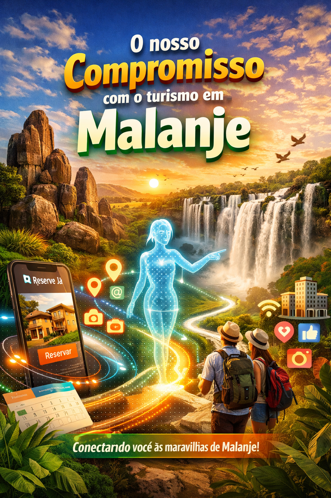

Conectamos viajantes, hotéis e paisagens únicas com tecnologia inteligente e sem burocracia.
Plataforma angolana que une hotelaria, turismo e inovação, oferecendo visibilidade para hotéis de Malanje e facilitando a descoberta das maravilhas da província com o apoio de inteligência artificial.

Reserve Já é um software inteligente criado para reduzir burocracias, dar visibilidade a hotéis através das redes sociais, conectar hóspedes a experiências únicas e usar Inteligência Artificial para guiar turistas pelas maravilhas da província — das Pedras Negras às Quedas de Calandula. Facilitamos reservas, impulsionamos a hotelaria local e mostramos o melhor de Malanje sem complicações.
Monólitos místicos e pegadas lendárias. Símbolo histórico e cultural único em Angola.
Pungo AndongoUma das maiores quedas de água de África, com 105 metros de altura e beleza arrasadora.
CalandulaÍcone da fauna angolana, símbolo de resistência e conservação no Parque Nacional da Cangandala.
CangandalaParaíso escondido em Cacuso, águas cristalinas e vegetação exuberante ideal para ecoturismo.
CacusoClique nos marcadores para saber mais sobre cada atração.
Divulgação automática de hotéis e destinos, aumentando o alcance orgânico.
Reservas simplificadas, sem processos demorados. Tudo digital e ágil.
Assistente virtual recomenda roteiros personalizados e hotspots de Malanje.
Hotéis cadastrados
Pontos turísticos
Reservas facilitadas
Viajantes conectados